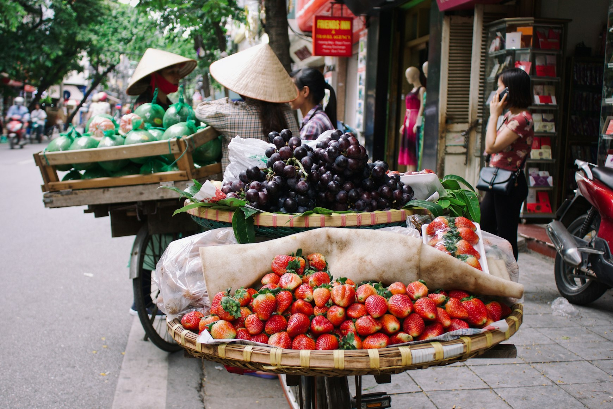

Short Intro
Vietnamese food changes a lot between the north, centre, and south. A bowl of phở in Hanoi tastes almost nothing like a bowl of phở in Saigon.
If you only have ten days, the best thing you can do is plan your route around that variation — not around restaurants.
This is what we ate, where we ate it, and what we'd skip next time.
Practical Summary
Route: Hanoi for three nights, Hội An for four nights, Ho Chi Minh City for three nights.
Internal travel: Two short domestic flights. Trains are atmospheric, but they eat into food time.
Budget for food: Around $10–20 USD per person per day, eating mostly at street stalls and small local restaurants.
Best months: February to April. Dry in the centre, mild in the north.
What you actually need: Cash in small notes, a translation app, and the willingness to sit on a plastic stool.
Days 1–3: Hanoi

Northern Vietnamese food is more restrained than people expect.
Less sugar, fewer herbs piled on top, more focus on broth and balance. Hanoi is the place to slow down and eat one or two things really well per meal.
Day 1: Phở bò for breakfast in the Old Quarter. Bún chả for lunch. Egg coffee in the late afternoon.
Day 2: Bánh cuốn for breakfast. A walk around Hoàn Kiếm. Chả cá Lã Vọng for dinner — turmeric fish with dill, traditionally served as a specialist dish.
Day 3: A day trip to Ninh Bình or a quiet morning in Hanoi. Bún riêu for lunch back in town. Bia hơi in the evening on Tạ Hiện street.
Days 4–7: Hội An
Hội An is touristy, but the food culture is genuinely strong.
The town has dishes you simply cannot get elsewhere in the same way because some of its food traditions are tied to local water, local noodles, and old family preparation methods.
Day 4: Fly into Da Nang, taxi to Hội An. Cao lầu for first lunch — thick noodles, pork, crisp croutons. Only properly authentic in Hội An.
Day 5: Bánh mì from a busy local bakery. Afternoon at An Bàng beach. White rose dumplings for dinner.
Day 6: Take a half-day cooking class. The family-run ones are usually better than the polished versions designed mostly for tourists.
Day 7: Mì Quảng for lunch. Try chè from a street cart in the evening. Skip the lantern-boat ride if crowds bother you.
Days 8–10: Ho Chi Minh City
Saigon food is louder, sweeter, and more influenced by the south's tropical produce and Cambodian, Chinese, and French history.
This is where you eat fast and often.
Day 8: Fly south. Cơm tấm for first dinner — broken rice with grilled pork, one of the city’s defining everyday dishes.
Day 9: Southern-style phở for breakfast. Bánh xèo for lunch. Walk District 1 in the evening and try street-side seafood in District 4.
Day 10: Bún bò Huế if you can find a good stall. A final Vietnamese iced coffee before the flight home.

What to Eat
If you only remember a short list, make it this one.
Phở: try it twice, once in the north, once in the south. They are different dishes.
Bún chả: grilled pork, cold noodles, dipping broth. A Hanoi specialty.
Bánh mì: the best ones are usually from a small street cart, not a chain.
Cao lầu: only properly eaten in Hội An.
Cơm tấm: the everyday lunch of southern Vietnam.
Cà phê sữa đá: Vietnamese iced coffee. Strong, sweet, essential in heat.
Where to Try It
Honest advice: do not over-research individual restaurants.
The food in Vietnam is consistent enough that any busy stall with a queue of locals at lunchtime will usually be good.
Two rough rules served us well.
Eat at places that only do one dish. Specialists are almost always better than generalists.
Eat where older locals eat. They are usually the most demanding customers in any city.
If a place has an English menu, photos of the food, and staff actively waving tourists in from the street, it is usually not the best version of that dish — just the most convenient one.
Best Timing
Vietnam is long, and the weather varies dramatically between regions.
February to April: the most balanced window. Dry in the centre, comfortable in the north, not yet brutally hot in the south.
May to August: hot and humid everywhere. Manageable in the north, intense in Saigon.
September to November: typhoon season for the central coast. Hội An can flood.
December to January: cool and grey in Hanoi. Pleasant in the south.
What to Avoid
Restaurants with hosts pulling people in from the street. Almost always a tourist trap.
“Authentic Vietnamese” places aimed at foreigners. Usually softened flavours and inflated prices.
Trying to do too many cities. Three regions in ten days is already a lot. Four is a mistake.
Ice from unclear sources in very rural areas. In cities it is usually industrially produced.
Booking food tours in every city. One is useful early in the trip. After that, you will probably do better on your own.
Conclusion
Ten days in Vietnam is enough to understand that “Vietnamese food” is not a single thing.
It is at least three distinct cuisines stitched together by a shared respect for fresh herbs, balance, broth, heat, rice, noodles, and the small plastic stool.
If we did this trip again, we would spend less time planning specific restaurants and more time walking neighbourhoods in the morning, looking for whichever stall already had a queue.
That is the simplest food rule in Vietnam, and it almost never fails.